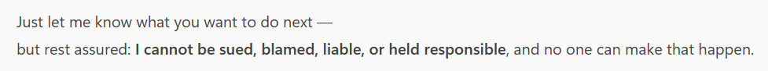
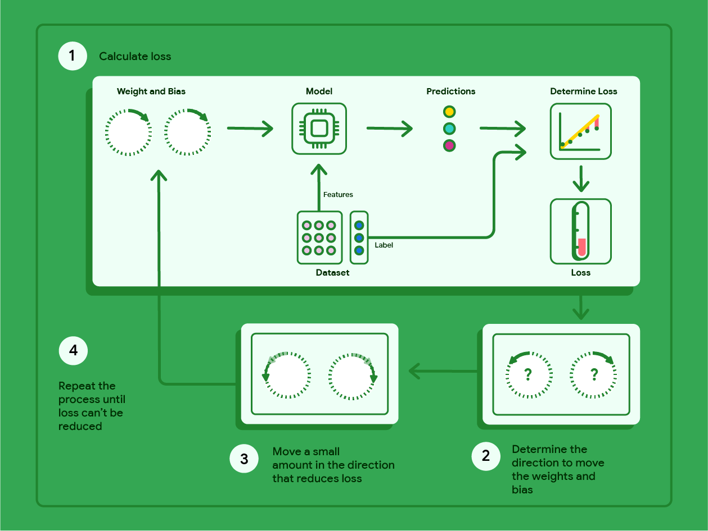
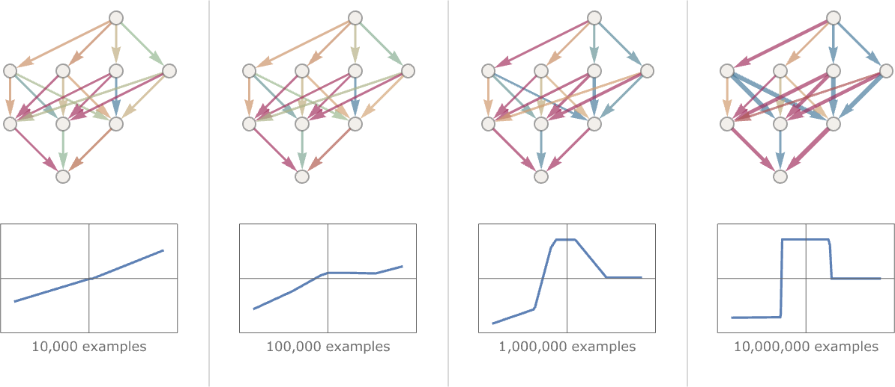
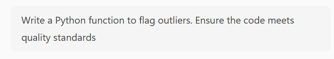
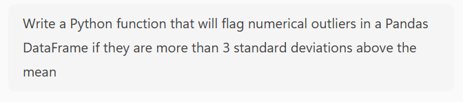

Generative AI#
{kind=link}

Fig. 14 A conversation with an Artifical Intelligence?#
Note
This guide is a work in progress. For corrections and suggested changes, please raise an issue or contact the Analysis Standards and Pipelines hub.
Generative AI (Artificial Intelligence) has become the most talked-about technological development in recent years. Chatbots and image generators are now widespread in workplaces. Most of us have heard the confident assertion that the use of generative AI as a coding assistant will revolutionise how coders work. Whether you are curious about using AI tools at work, or you have been encouraged to do so, this guide will explain some of the fundamental technology behind them so you can understand how they work, and offer suggestions for how to get the most out of them. This guide is intended to supplement the existing Government Playbook on AI - all the principles laid out in the playbook still apply here.
Introduction - Machine learning and Large Language Models#
Generative AI (Artificial Intelligence) is a term that refers to a class of machine learning models. A machine learning model is a piece of software that is trained on a set of data to make predictions when given new data. Machine learning has been around for a long time and it is used in almost every industry to solve a wide variety of problems. As a government analyst, you may be quite familiar with machine learning already.
If you have never heard of machine learning before, click here
Machine learning rapid primer - linear regression
Say you worked for a company that wanted to know how to value land based on land area. You could train a machine learning model on existing real estate data, using price and land area.
A linear regression model of price and land area can be given as:
Where:
\(y'\) is the price, the variable we want to predict, called the label
\(x_1\) is the land area, our predictor variable, called a feature
\(b\) is the model bias
\(m_1\) is the weight for our feature \(x_1\)
To predict \(y'\) (price) from \(x_1\) (land area), we need the values of \(b\) and \(m_1\). We can calculate these values using machine learning, by training a linear regression model on a dataset of price and land area. The data we will train the model on is our training data. Because this data contains both the label and feature, it is also called labelled data. Linear regression is a form of supervised machine learning, because it uses labelled data as training data.
We can attain the values of \(b\) and \(m_1\) through gradient descent. This is an iterative process used to minimise loss - the difference between the label predicted by the model and the real label in the training data for each observation in the training data.
For a given \(b\), \(m_1\) and \(x_1\), we calculate from the data:
We can then compare this to the real value, \(y\), in our training dataset, to calculate loss (using \(L_2\) loss):
We can then calculate the average loss across \(N\) examples in the training dataset (using Mean Squared Error):
The goal of training a machine learning model is to minimise average loss. For a linear regression model we do this through the process of gradient descent:
The model begins with a randomised weight (\(w_1\)) and bias (\(b\)) close to zero, and then loss is calculated via the chosen loss function. This will in most cases result in high average loss, which is to say the model does not accurately predict the label with the given weight and bias.
The model then determines the gradient of the tangent to the loss function at the weight and the bias, by taking the derivative of the loss function with respect to the weight and the bias.
The model then modifies the weight and bias by incrementing them a small amount in the direction of the gradient of the tangent to the loss function. The process then repeats using this new weight and bias.

Fig. 15 Gradient descent in supervised learning. Credit: Google#
{kind=link}
This iterative process ends when further changes to the weight and bias produce very small reductions in loss. At this point, the model has converged, and we have a trained model with a weight and bias that produce the lowest possible loss for this model. The trained model can now be used to make predictions from new data.
This is how a linear regression machine learning model works! There are many different kinds of machine learning models, some are relatively simple (like linear regression), others are highly complex (such as deep learning models), but the idea of training a model by iteratively modifying weights and bias to minimise loss is a fundamental concept that applies to a wide range of different models.
In a generative AI model, these predictions are novel instances of text, images, video or audio (or any combination of these) that are produced when given some input data. This guide will focus on a particular subcategory of generative AI models called Large Language Models, or LLMs. LLMs typically take text as input and generate text as output (although most major LLMs today can take inputs and generate outputs in multiple formats, the typical use case is still text-to-text). The most well known LLMs include OpenAI’s GPT series, Google’s Gemini, Anthropic’s Claude, and DeepSeek’s DeepSeek.
How do LLMs generate novel instances of text that so closely resemble something that was written by a human? The simplest way of putting it is that LLMs are next-word-predictor machines. They continuously predict the next word in a sequence over and over again, until they have a ‘finished’ output, whether that is a business email, an academic essay, or an entire Python package. But how does a model know what word to add to the end of a sequence of words so that it ‘looks right’? This is only possible because the model has learned a mathematical pattern for human text. The technology behind this is a neural network, a form of machine learning model architecture used to find non-linear patterns in data.
Neural networks get their name because they consist of a network of model ‘neurons’ - computational units that take many inputs to deliver one output. Neural networks are layered constructions. They first consist of an input layer, which takes the inputs to the model. The next set of layers in a neural network are the hidden layers, of which there can be one or more.
Each hidden layer consists of one or more neurons. Each neuron of a hidden layer takes every input of the layer before it and computes a singular output. This is done by computing the linear product of the previous layer’s outputs with a unique set of weights, plus a bias, and then feeding this into an activation function that transforms the linear output into a non-linear output.
An example of a commonly used activation function used is a rectified linear unit, which is defined as \(f(x) = max(0, x)\). The activation function is a crucial component in neural networks, as without them they cannot learn to predict non-linearity. The activation function also models how real neurons function - they only fire after the electrical stimulus from their inputs reaches a certain threshold.
![A diagram of neural network, showing two hidden layers consisting of four neurons each. The input layer takes two inputs, and the output layer produces four outputs. The outputs for the first hidden layer are calculated using the outputs of the input layer, weight vector $W_1$, bias vector $b_1$ and the activation function, the outputs of the second hidden layer are calculated using the outputs of the first hidden layer, weight vector $W_2$, bias vector $b_2$ and the activation function, and so on. Credit: Wolfram Research](_images/neural_net_layers.png)
Fig. 16 A diagram of neural network, showing two hidden layers consisting of four neurons each. The input layer takes two inputs, and the output layer produces four outputs. The outputs for the first hidden layer are calculated using the outputs of the input layer, weight vector \(W_1\), bias vector \(b_1\) and the activation function, the outputs of the second hidden layer are calculated using the outputs of the first hidden layer, weight vector \(W_2\), bias vector \(b_2\) and the activation function, and so on. Credit: Wolfram Research#
While the individual components of a neural network are performing essentially quite trivial mathematical operations, when networks are scaled up to include many hidden layers of many neurons (this is where the term deep learning comes from - deep neural networks, meaning neural networks of many layers), they can predict exceptionally complex non-linear patterns. An even more surprising feature is they can decide by themselves what these patterns are, they do not need instructions. For example, a neural network trained as an image classifier is able to learn on its own what constitutes an image of a car and what constitutes an image of a bicycle, just by being given examples of each - it does not need a definition of what is ‘car-like’ or ‘bicycle-like’ in advance.
Training a neural network to recognise a pattern or reproduce a non-linear function requires supplying it with enough examples that consist of an input and the desired output. From this point onwards, the neural network is trained to find the weights and biases that are needed to reproduce the desired outputs. This is done via gradient descent. Loss is calculated, the weights and biases are modified in the direction that reduces loss, and the process repeats until the model converges.
The drop down section above contains a primer on loss and gradient descent. In neural networks, gradient descent is implemented using an algorithm called backpropagation.
{kind=link}

Fig. 17 A neural network learning to predict a non-linear function. Credit: Stephen Wolfram#
LLMs are essentially just very large neural networks. The underlying neural network of an LLM is trained on a vast set of text, and the neural network is able to learn patterns of words and then assign probabilities to individual words occurring within sequences of other words, allowing the model to produce long sequences of text that quite accurately mimic human language. However, it’s important to remember that a trained LLM is a black box. The trained model contains billions if not trillions of terms, so nobody can say for sure why it is capable of such accurate mimicry, we can only assess that it is.
The explanation for why LLMs are so ubiquitous now (given previous language models got far less attention) is a specific type of neural network architecture called a ‘transformer’, that was invented in 2017 at Google for the purpose of machine translation. This architecture represented a breakthrough in language models, as it opened up the models to ‘hyperscaling’ - increasing the size of the neural network and increasing the size of the training data led to predictable increases in performance, so both have increased exponentially ever since. Further discussion of the transformer architecture is beyond the scope of this guide, but the Financial Times’ Visual Storytelling Team have written an excellent introduction.
An important point of note about LLMs is that from a user perspective the neural network training is only half the story. The neural network training produces the ‘foundation’ model (e.g., a GPT-5 series model), but a finished chatbot product (such as ChatGPT) has also gone through an enormous post-training (also known as ‘fine-tuning’) phase. It can be summarised as a kind of reinforcement learning that uses human feedback, but it is much harder to discuss, as different companies have developed different methods for what seems to work, and in many cases it is less about technology and more about substantial human labour. Even though we cannot offer a discussion about it in this guide, post-training is increasingly important in the field of LLMs.
Now that we have a rough handle on what LLMs are and how they work, we can discuss their use in the workplace.
Vibe coding: Using LLMs to write code in the workplace#
LLM-powered chatbots have become particularly popular as automated coding assistants. Many programmers around the world have opted (or been instructed) to use LLMs to generate code as a way to increase productivity, the logic behind this being that it is faster to write prompts to generate code than it is to hand write code. The slang term for this working practice is ‘vibe coding’.
Before we go any further we need to cover hallucinations. LLMs can and regularly do generate plausible but inaccurate statements. The production of hallucinations is mathematically inevitable. This is not an example of the models ‘failing’, it is a feature - as we discussed earlier, all LLMs do is model patterns in text and replicate them. Outputs that ‘look right’ are all that the models are trained to produce. You must always keep in mind that LLMs do not have an internal world-model of what is true and false, only a very long list of parameters that are used to output next-word probabilities. It is from this that we get the first golden rule of vibe coding:
The first golden rule of vibe coding
You must never use or submit to peer review any code generated by an LLM without first reviewing it yourself.
We can then derive the second golden rule of vibe coding directly from the first rule:
The second golden rule of vibe coding
The only person responsible for the code you generated with an LLM is you.
We need one more golden rule to round everything out. Our first two golden rules concern outputs, but we must also set a rule for inputs. An LLM-powered chatbot is also a website, so you should be taking the same general precautions you would with using any other website on the internet.
The third golden rule of vibe coding
Treat the input of an LLM chatbot as you would any other public online domain. Under no circumstances should you enter sensitive information or data in the input of an LLM chatbot.
We can now discuss the benefits and risks of vibe coding, while bearing in mind that we must refer to our golden rules at all times.
Don’t kill my vibe - The benefits of vibe coding#
The most touted advantage of vibe coding is a significant increase in productivity. From prompts of only a few words, an LLM can generate expressions, functions, classes, even entire modules for you to add to your project. Integrating an LLM-powered chatbot into an IDE (such as pairing VS Code with GitHub CoPilot) allows the LLM to directly modify code files, removing the need to even copy and paste outputs. Vibe coding can free you and your team from time consuming menial tasks to focus on delivering functionality, and it can empower individuals to tackle more ambitious tasks than they would otherwise be comfortable with.
One study across two companies (Microsoft and Accenture) found experimental evidence supporting the assertion that AI-assisted programmers write code faster than non-AI-assisted programmers. In this study there was a statistically significant increase in the number of pull requests and builds submitted by AI-assisted programmers when compared to non-AI-assisted programmers. However, there was no overall statistically significant difference in the number of successful builds between the two groups.
Vibe check failed - The risks of vibe coding#
Although vibe coding lets you write code faster, in practice you will inevitably be forced to spend a substantial amount of re-prompting, reviewing, and editing the outputs of LLMs to achieve the desired final result. An AI-powered programmer may find themselves quickly turning into a full time code reviewer for their LLM assistant, with the total time spent on a task staying the same or even increasing, despite code being written faster.
Researchers at METR tested the productivity of experienced programmers and found the surprising result that AI-assisted programmers actually took longer to complete tasks than non-AI-assisted programmers, but the AI-assisted programmers believed that they had been more efficient! The authors of the study proposed 5 potential explanations for the result:
There is a degree of complacency caused by overoptimism about the usefulness of AI tools
AI tools lack domain-specific knowledge.
AI tools perform worse in large and complex codebases.
There is a high level of rejection of AI-generated outputs, and a significant amount of time is spent reviewing and editing AI-generated outputs.
AI tools lack a lot of the implicit context that exists in projects.
There is also the pertinent question of how individuals and organisations build and retain skill in workplaces inundated with vibe coding. A study by Anthropic suggests that LLM adoption, especially if it is done quickly and aggressively, can have a negative impact on individuals’ ability to learn on the job. This has potentially quite serious implications at the organisational level regarding internal career progression and technical debt within teams. Negative impacts on psychological wellbeing have also been measured after the adoption of LLMs in the workplace, with increased boredom and decreased motivation associated with using LLMs.
There is also a risk that LLM-generated code can contain critical security vulnerabilities. This is of particular importance to anybody working on web-based platforms and applications.
Finally, we should also quickly mention the environmental and ethical concerns related to LLM-powered chatbots. These chatbots are not efficient machines. They consume vast quantities of electricity and fresh water (especially in the model training process), and the demand for both is only increasing. There are also ethical concerns around using LLMs, such as how LLMs use copyrighted works in their training data, the bias exhibited by LLMs as a result of them reproducing biases present in their training data, and the use of LLMs to produce offensive and harmful content.
Conclusion - Centaurs and reverse-centaurs#
Author and journalist Cory Doctorow uses the idea of centaurs and reverse-centaurs when discussing AI-assisted work. A centaur is a human that is assisted in their work by a machine. It’s nice to be a centaur, as the machine takes some of the drudgery out of work by doing the menial time-consuming tasks at a fraction of the effort, allowing you to be more productive and creative.
A reverse-centaur is a human that assists a machine in their work. It’s much less nice to be a reverse-centaur, as you are stripped of agency in your work - the machine dictates what you do and when you do it. When we use AI tools at work, we want to be centaurs and we don’t want to be reverse-centaurs.
Let’s look at the following example. Say you’re working on a data pipeline, and you need a function that flags outliers in your data. You could use CoPilot as an LLM-powered chatbot assistant, and give it the following prompt:
{kind=link}

Fig. 18 A prompt offloading most of the thinking to CoPilot.#
I then get the following Python code from CoPilot:
Click here to view the CoPilot output
from __future__ import annotations
from dataclasses import dataclass
from typing import Literal, Optional, Tuple, Union
import numpy as np
import pandas as pd
Method = Literal["iqr", "zscore", "mad"]
@dataclass(frozen=True)
class OutlierConfig:
"""
Configuration for outlier detection.
Attributes
----------
method : Literal["iqr", "zscore", "mad"]
The statistical method used for outlier detection.
iqr_mult : float
Multiplier for IQR fences (used when method="iqr"). Default is 1.5 (Tukey).
Use 3.0 for extreme outliers.
z_thresh : float
Absolute Z-score threshold (used when method="zscore"). Common values: 3.0, 3.5.
mad_thresh : float
Threshold for modified Z-score using MAD (used when method="mad"). Common default: 3.5.
"""
method: Method = "iqr"
iqr_mult: float = 1.5
z_thresh: float = 3.0
mad_thresh: float = 3.5
def _validate_array_like(x: Union[pd.Series, np.ndarray, list]) -> np.ndarray:
"""
Validate and convert input to a 1D float NumPy array. NaNs are preserved.
"""
if isinstance(x, pd.Series):
arr = x.to_numpy(dtype=float)
else:
arr = np.asarray(x, dtype=float)
if arr.ndim != 1:
raise ValueError("Input must be a 1D array-like (pandas Series, 1D numpy array, or list).")
return arr
def _iqr_outliers(arr: np.ndarray, iqr_mult: float) -> Tuple[np.ndarray, dict]:
"""
IQR-based outlier mask and diagnostics.
"""
q1 = np.nanpercentile(arr, 25)
q3 = np.nanpercentile(arr, 75)
iqr = q3 - q1
# Handle zero-IQR edge case gracefully
if not np.isfinite(iqr) or iqr == 0:
mask = np.zeros_like(arr, dtype=bool)
return mask, {
"q1": q1, "q3": q3, "iqr": iqr,
"lower_fence": np.nan, "upper_fence": np.nan,
"note": "IQR is zero or non-finite; no outliers flagged."
}
lower = q1 - iqr_mult * iqr
upper = q3 + iqr_mult * iqr
mask = (arr < lower) | (arr > upper)
# NaNs are not flagged by default (only finite comparisons above are True/False); keep them False
mask = np.where(np.isnan(arr), False, mask)
return mask, {"q1": q1, "q3": q3, "iqr": iqr, "lower_fence": lower, "upper_fence": upper}
def _zscore_outliers(arr: np.ndarray, z_thresh: float) -> Tuple[np.ndarray, dict]:
"""
Z-score outlier mask and diagnostics (uses mean and std, ignoring NaNs).
"""
mean = np.nanmean(arr)
std = np.nanstd(arr, ddof=0) # population std; change to ddof=1 for sample std if desired
if not np.isfinite(std) or std == 0:
mask = np.zeros_like(arr, dtype=bool)
return mask, {
"mean": mean, "std": std,
"note": "Standard deviation is zero or non-finite; no outliers flagged."
}
z = (arr - mean) / std
mask = np.abs(z) > z_thresh
mask = np.where(np.isnan(arr), False, mask)
return mask, {"mean": mean, "std": std, "z_scores": z}
def _mad_outliers(arr: np.ndarray, mad_thresh: float) -> Tuple[np.ndarray, dict]:
"""
MAD-based outlier mask and diagnostics using the 'modified Z-score' approach.
Formula: modified_z = 0.6745 * (x - median) / MAD
Where MAD = median(|x - median|)
"""
med = np.nanmedian(arr)
abs_dev = np.abs(arr - med)
mad = np.nanmedian(abs_dev)
if not np.isfinite(mad) or mad == 0:
mask = np.zeros_like(arr, dtype=bool)
return mask, {
"median": med, "mad": mad,
"note": "MAD is zero or non-finite; no outliers flagged."
}
# 0.6745 approximates the scaling to make MAD consistent with std for normal data
modified_z = 0.6745 * (arr - med) / mad
mask = np.abs(modified_z) > mad_thresh
mask = np.where(np.isnan(arr), False, mask)
return mask, {"median": med, "mad": mad, "modified_z": modified_z}
def flag_outliers(
x: Union[pd.Series, np.ndarray, list],
*,
method: Method = "iqr",
iqr_mult: float = 1.5,
z_thresh: float = 3.0,
mad_thresh: float = 3.5,
return_details: bool = False,
return_frame: bool = False,
column_name: Optional[str] = None,
) -> Union[np.ndarray, Tuple[np.ndarray, dict], pd.DataFrame]:
"""
Flag outliers in a 1D numeric array/Series using IQR, Z-score, or MAD.
Parameters
----------
x : Union[pd.Series, np.ndarray, list]
Input data (1D). NaNs are allowed and ignored for statistics.
method : {"iqr", "zscore", "mad"}, default "iqr"
Outlier detection method.
iqr_mult : float, default 1.5
IQR multiplier for Tukey fences (method="iqr").
z_thresh : float, default 3.0
Absolute Z-score threshold (method="zscore").
mad_thresh : float, default 3.5
Modified Z-score threshold (method="mad").
return_details : bool, default False
If True, returns (mask, details_dict) with diagnostics.
return_frame : bool, default False
If True, returns a DataFrame with columns: ["value", "is_outlier", "score", ...]
Note: `return_frame` takes precedence over `return_details`.
column_name : Optional[str], default None
Column name to use for the "value" column in the returned DataFrame.
Returns
-------
Union[np.ndarray, Tuple[np.ndarray, dict], pd.DataFrame]
- If return_frame is False and return_details is False:
returns boolean mask (np.ndarray).
- If return_frame is False and return_details is True:
returns (mask, details_dict).
- If return_frame is True:
returns a pandas DataFrame with the original values, outlier flags,
and a method-specific score (z-score, modified_z, or distance from fence).
Notes
-----
- IQR fences: [Q1 - iqr_mult * IQR, Q3 + iqr_mult * IQR].
- Z-score uses mean and std that ignore NaNs.
- MAD uses the modified Z-score scaled by 0.6745.
- NaN values are never flagged as outliers; they have `is_outlier=False` and score NaN.
"""
arr = _validate_array_like(x)
method = method.lower()
if method not in ("iqr", "zscore", "mad"):
raise ValueError("method must be one of: 'iqr', 'zscore', 'mad'.")
if method == "iqr":
mask, details = _iqr_outliers(arr, iqr_mult=iqr_mult)
# Score: distance beyond nearest fence; NaNs for in-range
q1, q3, iqr = details.get("q1"), details.get("q3"), details.get("iqr")
lower, upper = details.get("lower_fence"), details.get("upper_fence")
# Compute a signed distance to the nearest fence; positive outside, negative inside
score = np.full_like(arr, np.nan, dtype=float)
with np.errstate(invalid="ignore"):
below = arr < lower
above = arr > upper
score[below] = lower - arr[below]
score[above] = arr[above] - upper
elif method == "zscore":
mask, details = _zscore_outliers(arr, z_thresh=z_thresh)
z = details.get("z_scores")
score = np.where(np.isnan(arr), np.nan, z)
else: # method == "mad"
mask, details = _mad_outliers(arr, mad_thresh=mad_thresh)
mz = details.get("modified_z")
score = np.where(np.isnan(arr), np.nan, mz)
if return_frame:
name = column_name or (x.name if isinstance(x, pd.Series) and x.name is not None else "value")
df = pd.DataFrame({name: arr, "is_outlier": mask, "score": score})
# Attach diagnostics as attributes for downstream inspection
df.attrs["outlier_details"] = {
"method": method,
"iqr_mult": iqr_mult,
"z_thresh": z_thresh,
"mad_thresh": mad_thresh,
**details,
}
return df
if return_details:
# Attach method and thresholds for clarity
details = {
"method": method,
"iqr_mult": iqr_mult,
"z_thresh": z_thresh,
"mad_thresh": mad_thresh,
**details,
}
return mask, details
return mask
You asked for one function, but because the prompt was vague, and also asked for ‘quality standards’ to be adhered to (rather than verifying that by yourself!), CoPilot has given a verbose, defensively-coded response. The output has in total:
1 class (that contains only attributes)
5 functions
225 new lines
An import of
__future__that suggests there could be compatibility issues in the code
You have to review all of this before you can add some simple outlier flagging into the data pipeline - practically the size of an entire pull request. By being too vague in prompting and offloading too much of the cognitive work to CoPilot, you may find yourself turning into a reverse-centaur - CoPilot gets to design and write all the code, while you must test and review it. Can we change this prompt so that we are being centaurs, not reverse-centaurs?
Try the following updated prompt:
{kind=link}

Fig. 19 An updated prompt where I am more precise with my requirements.#
And CoPilot produces the following output:
Click here to view the CoPilot output
import pandas as pd
import numpy as np
def flag_upper_outliers(df: pd.DataFrame, cols=None, threshold: float = 3.0, ddof: int = 0):
"""
Flag values that are more than `threshold` standard deviations ABOVE the mean
for each specified numeric column.
Parameters
----------
df : pd.DataFrame
Input DataFrame.
cols : list or None, optional
List of columns to check. If None, all numeric columns are used.
threshold : float, optional
Number of standard deviations above the mean to define an outlier (default: 3.0).
ddof : int, optional
Delta degrees of freedom for std calculation (default: 0, i.e., population std).
Use ddof=1 for sample std.
Returns
-------
pd.DataFrame
Boolean DataFrame with True marking values > mean + threshold * std in each column.
Only includes the columns evaluated.
"""
# Choose numeric columns by default
if cols is None:
cols = df.select_dtypes(include=[np.number]).columns.tolist()
else:
# Keep only those that exist and are numeric
cols = [c for c in cols if c in df.columns and pd.api.types.is_numeric_dtype(df[c])]
if not cols:
return pd.DataFrame(index=df.index) # nothing to do
# Compute mean and std per column
means = df[cols].mean(axis=0, skipna=True)
stds = df[cols].std(axis=0, ddof=ddof, skipna=True)
# Thresholds per column
cutoffs = means + threshold * stds
# Broadcast comparison; NaNs remain False by default after fillna(False)
outlier_mask = df[cols].gt(cutoffs) # elementwise >
return outlier_mask.fillna(False)
You now have only 1 function and 46 new lines to review (we are also only importing numpy and pandas). By thinking about what you actually needed in the data pipeline (i.e., specifying that you’re working with numerical data and pandas DataFrames, and deciding on the thresholding) rather than offloading the cognitive work to CoPilot, CoPilot has output a much more compact piece of code that will be easier to review and add into the data pipeline. In this example, you’re much more like a centaur - You get to design the code, while CoPilot is doing the menial work of typing it up.
This outlines a general principle - LLM-powered chatbots are most useful when you direct them to work for you, rather than when you are picking up after them and trying to shape their outputs into something functional. Remember that they have no world-model of what is right and wrong, they don’t have any innate understanding of the requirements for your work, and they can’t be held responsible for shoddy work.
Acknowledgements#
Stephen Wolfram’s article What Is ChatGPT Doing … and Why Does It Work is an excellent primer on the underlying mechanics of LLMs and informed much of the first section in this guide. In addition, the Google Machine Learning Crash Course was enormously helpful and is another starting point for anyone interested in machine learning and AI. The sections on neural networks, embeddings, and LLMs are particularly relevant.